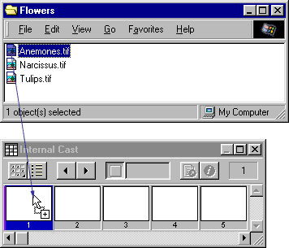

Using Director > Cast members and Cast windows > Importing cast members
Using Director > Cast members and Cast windows > Importing cast members |
Importing cast members
Importing lets you create cast members from external media. You can either import data into a Director movie file or create a link to the external file and re-import the file each time the movie opens. Linked files let you display dynamic media from the Internet, such as sports scores, sounds, and weather pictures, which makes downloading movies faster. See About linking to files.
Director can import cast members from almost every popular media file format. See About import file formats.
You can import files by using the Import dialog box, dragging files from the desktop to a Cast window, or using Lingo.
To import cast members and specify import options:
1 |
In Thumbnail view, select an empty position in a cast. |
If no cast position is selected, Director places the new cast member in the first available position in the current cast in Thumbnail view. In List view, Director places the new cast member at the end of the list. |
|
2 |
Choose File > Import. |
3 |
To import a file from the Internet, click Internet and enter a URL. |
4 |
To import local files, choose the type of media to import from the Files of Type (Windows) or Show (Macintosh) pop-up menu. |
All the files in the current directory appear unless you make a selection. |
|
5 |
To select a file or files to import, do one of the following: |
Double-click a file. |
|
Select one or more files and click Add. |
|
Click Add All. |
|
You can switch folders and import files from different folders at the same time. |
|
6 |
From the Media pop-up menu at the bottom of the dialog box, choose an option to specify how to treat imported media: |
Standard Import imports all selected files, storing them inside the movie file but not updating them when changes are made to the source material. If you selected the option to import from the Internet in step 3, Director retrieves the file immediately from the Internet if a connection is available. |
|
Note: AVI and QuickTime files are always linked to the original external file, even if you select Standard Import. |
|
Link to External File creates a link to the selected files and imports the data each time the movie runs. If you choose to import from a URL via the Internet, the media is dynamically updated. See About linking to files. |
|
Note: Text and RTF files are always imported and stored inside the movie file, even if you select Link to External File. |
|
Include Original Data for Editing preserves the original data in the movie file for use with an external editor. |
|
When this option is selected, Director keeps a copy of the original cast member data and sends the original to the external editor when you edit the cast member. This option preserves all of the editor's capabilities. For example, if you specify Photoshop to edit PICT images, Director maintains all of the Photoshop object data. See Launching external editors. |
|
Import PICT File as PICT prevents PICT files from being converted to bitmaps. |
|
7 |
If you selected a PICS or Scrapbook file to import, click Options to specify options for these files. See Setting import options for PICS and Scrapbook files. |
8 |
When you've finished selecting the files, click Import. |
If you've imported a bitmap with a color depth or color palette that differs from the current movie, the Image Options dialog box appears, in which you must enter additional information. See Choosing import image options. |
|
For information on importing specific media, see these sections:
To import files by dragging:
1 |
In the Explorer (Windows) or on the system desktop (Macintosh), select a file or files to import. |
2 |
Drag the files from the desktop to the desired position in the Cast window Thumbnail view, or to the Cast window List view.
 |
If you drag to List view, the imported files are added at the bottom of the list. |
|
To import files with Lingo:
Use the importFileInto command to import a file. Set the fileName cast member property to assign a new file to a linked cast member. See importFileInto and fileName (cast member property).